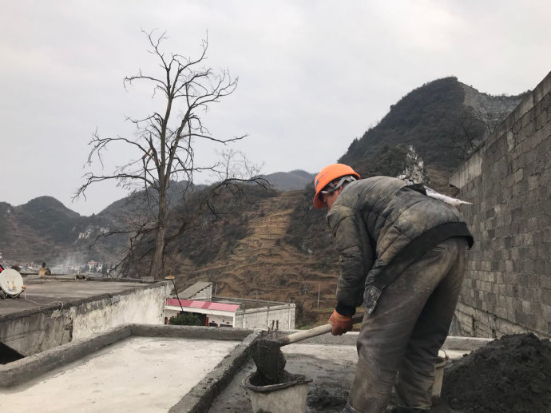

我的父亲，是没有影子的，即便是在阳光底下。醒目的，却是那矮小瘦弱的身躯。
——题记
父亲在电话里对我说，他累了。
我苟活人世20余载，第一次听到他说累。一直以来，我总是在道青春，追忆青春，祭奠青春，埋葬青春，疼痛青春……多少个日夜为爱痴狂，为爱感动，为爱哭泣，为爱心碎，很少很少提及或者想到我的父亲。
然而，此时此刻，我哭了，这次是为了什么？
我想从回忆深处找原因。
95年夏天，我顺利地出生在玉米地里。那时候与计生相关和无关的工作人员工作都十分积极，所以我还没出生之前，父亲便已计划好举家搬迁到贵州水城。我身在贵州，却从没踏到过这片土地上。父亲在这期间一直在一家石厂上班，工资极低。后来听母亲说，父亲的脚踝被一块山上滑落的石头块砸到过，石厂赔付了一点医药费。就在那年，母亲决意回到老家。我当时两岁，至于我那时候的样子，我问过母亲。母亲说，头大，爱哭，一天必须喂好几次奶，米粥还不喝，每次都留给妹妹。
记事的某一天，听母亲给邻居聊天时讲到当时一家五口回到老家时，家里所有东西都被一帮强盗拿了，门，窗也不见了。
那是我第一眼看到老家的房子。房子是父亲自己大老远去背石头砌的。
父亲当时特别疼惜老家的房子，又是自己大老远去背石头补墙缝，自己重搭谷草顶梁，自己做门和窗，还把家外面的一块地铺成了路，供大家使用。
满目狼藉，凄凄惨惨，这样的画面是我在过去某段叛逆年华里设想出的当时的画面。
非典那年，全国一片混乱，老家的人却无人知道“非典”何物。我记得只有小学数学老师提到过此物，说是一种会飞的口水，这让我和我的三位铁友吓得放学后必须一起在五星红旗下静坐半个小时，之后才敢回家，原因不明。然而也就在那年，父亲把他的房子改成了水泥板平房，至于是否又是他自己弄的，我不知道，我当时忙着和牛牛捡废品卖钱，攒够了钱才能加入皮带帮。白天一大早就出去，晚上很晚才回来。
父亲不会管我。
他的房子的变化我从来没看到过。自高中到现在读大学，我一年才回两次家，有时候只回一次。回家常听父亲念叨，房子我里外都贴成瓷砖了，明晃晃的，像是富贵人家。
今天，父亲电话里说：“儿啊，爸爸想找辆挖土机把房子背后那块地的泥巴挖了，以后你自己回来修，爸爸累了，修不动了！”
我照旧说：“爸，你又瞎忙，快五十的人了，房子的事儿你别操心了，以后我在哪里工作都还不知道，就想着修房子，再说，我这么大人了，挣到钱了自己会修的。”
电话一挂，我随即大哭。